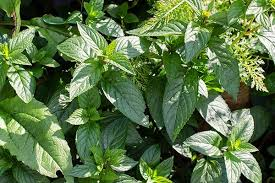
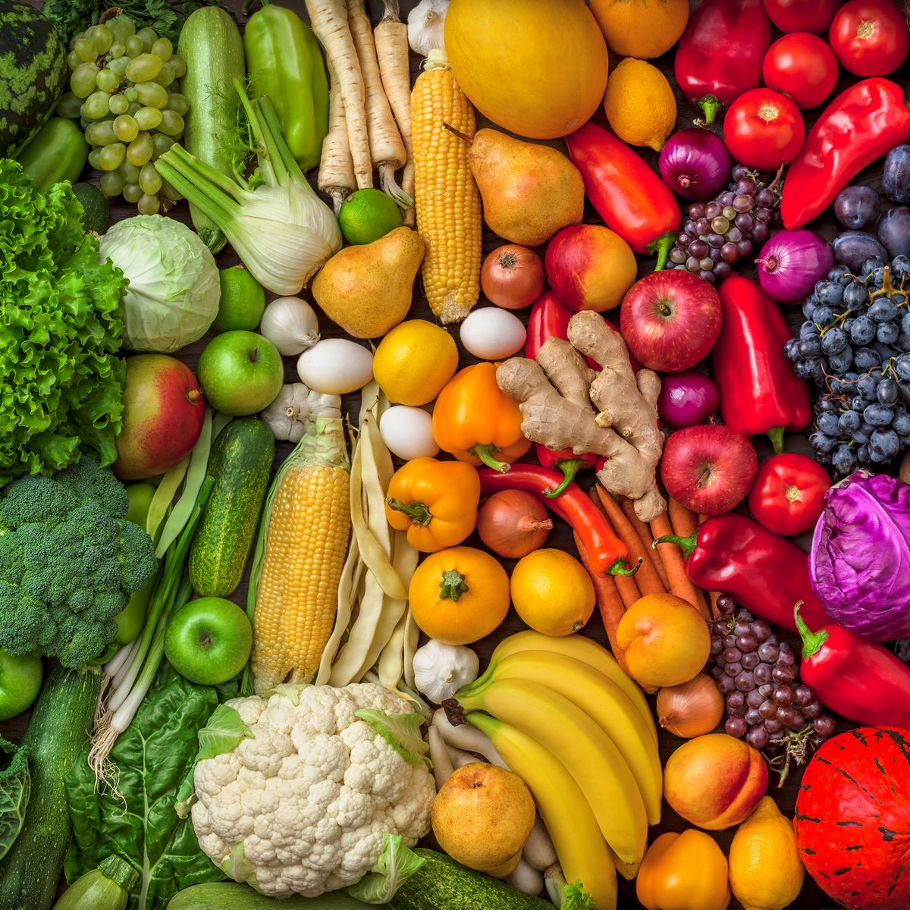
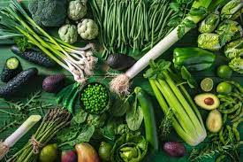
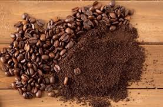
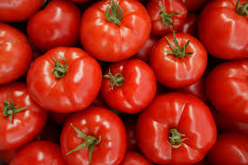

MINT
Mint is a popular herb that may possess potential health benefits. This may include helping with digestive health, reducing allergic symptoms, and soothing common cold symptoms. Mint or mentha belongs to the Lamiaceae family, which contains around 15–20 plant species, including peppermint and spearmintMint is a fragrant and delicious plant that is an ingredient in many foods and beverages. It also has health benefits that may include relieving indigestion, improving brain function, and masking bad breath.
PLANT BASED FOOD
Ask just about anyone what the difference between plant-based and vegan food is, and you'll get the same answer: "They're the same thing, right?" Contrary to what grocery store packaging and social media might insinuate, there's actually quite a big difference between these dietary lifestyles—and you'll probably find that you prefer one over the other, depending on your goals and values So what, exactly, makes a plant-based diet different from a vegan diet? To get it straight, we spoke to dietitians below. (Spoiler: You'll eat a lot of veggies either way.)
VEGETABLES
Right from the ancient days, leafy greens have been an important portion of the daily diet. Being power-packed with a variety of vitamins and minerals makes them a mandatory addition to every healthy diet plan. The fat and sugar content of green leafy vegetables is minimal, which also makes them fit for a weight loss diet. One of the biggest benefits of consuming leafy green vegetables is that they are extremely low in calories when compared to other foods. Despite being low in calories they are often dense in nutrients, which is why they are a preferred food item in a weight loss diet.
COFFE
Coffee is a beverage brewed from roasted coffee beans. Darkly colored, bitter, and slightly acidic, coffee has a stimulating effect on humans, primarily due to its caffeine content. It has the highest sales in the world market for hot drinks People most commonly drink coffee to increase mental alertness. Coffee is also used for diabetes, cancer, heart disease, high blood pressure, dementia, and many other conditions, but there is no good scientific evidence to support most of these uses. People most commonly drink coffee to increase mental alertness. Coffee is also used for diabetes, cancer, heart disease, high blood pressure, dementia, and many other conditions, but there is no good scientific evidence to support most of these uses.
TOMATOES
The tomato is the edible berry of the plant Solanum lycopersicum, commonly known as the tomato plant. The species originated in western South America, Mexico, and Central America. The Nahuatl word tomatl gave rise To the Spanish word tomate, from which the English word tomato derives. e loaded with a substance called lycopene. It gives them their bright red color and helps protect them from the ultraviolet rays of the sun. In much the same way, it can help protect your cells from damage. Tomatoes also have potassium, vitamins B and E, and other nutrients.
RAW FOOD PRODUCT

The majority of a raw food diet will usually be plant-based, although with a lower grain content than a typical vegan diet. Some people consume unpasteurised dairy products, and others also include raw (and, sometimes, dehydrated/dried) meat and fish.Chapman Family Cancer Wellness at Piedmont, says incorporating raw foods, specifically vegetables and fruits, into your diet can have numerous health benefits. “You will likely have more energy, better skin, improved digestion and a reduced risk of cardiovascular disease once you get used to eating raw food,” she says.